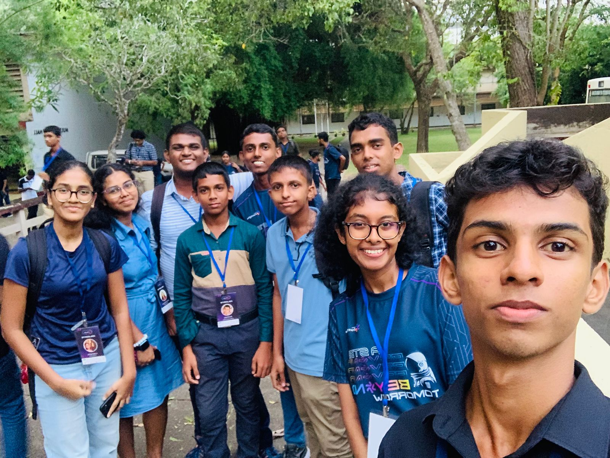

Manjari Meedeniya
Undergraduate @ University of MoratuwaThird-year Electronic and Telecommunication Engineering undergraduate at the University of Moratuwa, with a strong interest in intelligent hardware, electronics, and real-world application design. Experienced in analog/power electronics, electronic product development, circuit design, Internet of Things, and network infrastructure through hands-on projects, alongside an ongoing project in autonomous UAV development. Driven by a fast learning ability and strong skills in team leadership, technical communication, and project coordination.

Education
CGPA: 3.768 / 4.00
Pursuing a specialized degree focusing on embedded electronics, autonomous systems, robotics, machine learning, computer vision, and communication networks.
Results: 3 A's (Combined Mathematics, Physics, Chemistry) | Z-Score: 2.6016 (Island Rank 145th)
Results: 9 A's including Mathematics, Science, and English
• English Language (Intermediate) — Aquinas College of Higher Studies
• French Language (Beginner) & G.C.E. O/L French — Alliance Française de Colombo
Skills & Toolstack
Ongoing Projects
May 2026 – Present | Pixhawk, ArduPilot, Raspberry Pi, MAVSDK
- Integrating a Pixhawk flight controller running ArduPilot with a Raspberry Pi companion computer for onboard computer vision processing.
- Implementing real-time computer vision algorithms for target recognition, obstacle avoidance, and automated landing sequences.
- Managing full-stack drone integration including power distribution, failsafe protocols, and MAVSDK telemetry.
Sep 2026 – Present | Webots, Python, OpenCV, Closed-Loop Control
- Developed a real-time vision-based object-following system for an e-puck robot using Webots, Python, and OpenCV.
- Implemented HSV-based red-object detection and calculated target centroids from live camera feeds.
- Converted image-position errors into proportional steering commands for differential-drive motor control and visual proximity stopping.
Sep 2026 – Present | YOLO, PyTorch, Agricultural Datasets, CNNs
- Developing a computer vision system for detecting crops from aerial/UAV imagery using YOLO object detection models.
- Fine-tuning pretrained YOLO architectures on agricultural datasets using transfer learning and IoU/NMS post-processing.
- Exploring automated crop counting and spatial distribution analysis from detected crop regions.
Aug 2026 – Present | ArduPilot SITL, MAVLink, pymavlink, Python
- Built a simulation-based UAV control system using ArduPilot SITL and pymavlink to execute autonomous telemetry monitoring and navigation.
- Implemented GUIDED-mode flight control, including vehicle arming, takeoff, and position-based movement using `SET_POSITION_TARGET_LOCAL_NED`.
- Developed an autonomous L-shaped navigation sequence guided by live position telemetry feedback.
Aug 2026 – Present | ROS 2 Jazzy, Xacro, CMake, RViz Kinematics
- Structuring a ROS 2 (Jazzy) metapackage (`mycobot_ros2`) and description package (`mycobot_description`) using `ament_cmake`.
- Integrating 3D COLLADA mesh assets (.dae) and defining modular Xacro robot description files for joint kinematics and RViz visualization.
Completed Projects
Sep 2026 | OpenCV, NumPy, Matplotlib
- Implemented MRI brain image enhancement, piecewise intensity transformations, and HSV/$L^*a^*b^*$ color-space processing.
- Built custom histogram equalization, Sobel gradient edge filtering, and GrabCut segmentation algorithms.
Feb 2026 – Jul 2026 | German Equatorial Mount Structure
- Designed base and alt-azimuth subsystems for fine polar alignment in long-exposure astrophotography.
- Engineered parts in SolidWorks for mild-steel laser cutting and 3D printing with precision tolerancing.


Feb 2026 – May 2026 | Power Electronics & IR2104 Driver
- Co-designed a discrete buck converter featuring TL494 PWM generation, IR2104 gate driver, and op-amp feedback control.
- Validated switching waveforms, efficiency, and transient response on oscilloscopes during active load testing.


Jul 2025 – Nov 2025 | Embedded Hardware & Fall Detection
- Co-developed a wearable emergency response device with real-time fall detection using MPU6050 IMU sensors and ESP32.
- Configured GSM/GPS telemetry modules for automated SMS alerts and live GPS tracking during emergency incidents.

Oct 2025 – Dec 2025 | FPGA & Digital Logic Design
- Designed and simulated a custom UART receiver/transmitter engine in Verilog HDL on an Altera DE0-Nano FPGA.
- Integrated a multiplexed 7-segment LED controller with hardware debouncing and baud rate generation modules.

Dec 2025 – Feb 2026 | SDR & GNU Radio
- Engineered a two-way short-text paging framework using Software-Defined Radio (SDR) transceivers and GNU Radio flowgraphs.
- Implemented custom packet preamble framing, CRC-16 error check validation, and stop-and-wait ARQ retransmission logic.

Mar 2026 – Apr 2026 | Cisco Packet Tracer & Network Architecture
- Architected a multi-campus enterprise network topology incorporating redundant core, distribution, and access layer switches.
- Configured dual-stack IPv4/IPv6 addressing, OSPF dynamic routing, VLAN segmentation, DHCP relay, and NAT gateways.

May 2025 – Jul 2025 | Instrumentation & Signal Conditioning
- Designed a strain-gauge load cell instrumentation amplifier stage utilizing high-precision differential operational amplifiers.
- Integrated low-pass filtering and calibrated ADC conversion routines for sub-gram accuracy, housed in a custom 3D enclosure.


Volunteering & Public Speaking
IEEE Student Branch, University of Moratuwa
- Served on the Membership Development Committee (MDC), organizing membership drives, technical workshops, and student outreach programs.
- Coordinated logistics and student engagement initiatives across campus to foster active participation in IEEE activities.

University & Departmental Events
- Official Master of Ceremonies and announcer for major university flagship events, IEEE conferences, and departmental ceremonies.
- Delivered live announcements, moderated panel discussions, and led stage coordination for audiences exceeding 500+ attendees.
National Robotics Competition
- Contributed to the execution and operational management of RoboRoarz Sri Lanka, an autonomous robotics competition.
- Managed participant coordination, arena setups, and live event moderation throughout the competition days.


University Talent & Mentorship Program
- Served on the selection committee for candidate evaluation and interview processing.
- Facilitated session coordination and team mentorship programs for undergraduate participants.




Extracurricular Outside the Lab
Inter-Hall & University Competitions
- Competed in inter-hall and university badminton tournaments.